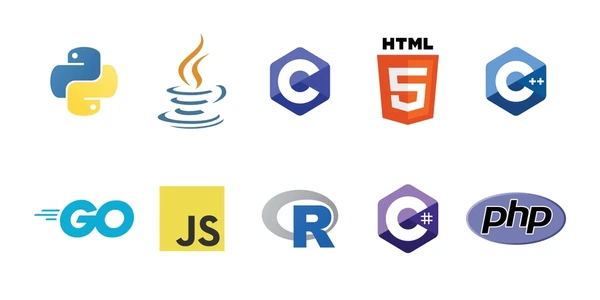

Bio
I am enrolled in a Ph.D. program at the School of Computing in Southern Illinois University.
My educational background includes a B.Sc. degree in Computer Science and Engineering from Chittagong
University of Engineering and Technology (CUET).
I have been working as a researcher at the SUPREME Lab since Fall'22 under the guidance of Professor
Dr. Sajedul Talukder.
My primary research focus revolves around areas such as Federated Learning, Machine Learning, Deep
Learning, Natural Language Processing (NLP),
and Social Networks. Previously, I worked as a senior software engineer at Samsung R&D Institute
Bangladesh,
where I made valuable contributions to a collaborative project with Samsung Network Division.
Specifically,
I focused on the development of web-based tools catering to the needs of 4G and 5G developers.
Alongside my professional endeavors,
I have actively participated in competitive programming on platforms such as Leetcode, Codeforces,
Uva, LightOj, Spoj, and Hackerrank,
achieving noteworthy success. Throughout my tenure at Samsung, I consistently demonstrated exceptional
performance by securing prizes
and earning advanced level certificates in the monthly contests organized by Samsung R&D. My technical
expertise encompasses both
front-end and back-end development, with responsibilities ranging from requirements analysis to
software module design, development,
testing, and server deployment. Moreover, I actively engaged in knowledge-sharing activities during my
time at Samsung, conducting
sessions on topics such as software engineering principles, emerging technologies, and best practices
for clean coding. My performance
at Samsung led to my selection as a distinguished candidate among many others at Samsung, resulting in
an opportunity to collaborate
with the Suwon team on diverse projects at Samsung Digital City in Suwon, Korea.
Professional Experience
-
Assistant Officer
April 2022 – December 2023
Global Islami Bank Ltd.
Working at ADC-services team in GIBL Corporate Head Office
- Monitoring Database Management System
- Data checking & analysis using SQL queries in Database
- Software Quality Assurance - GIB Mobile App Testing
- Preparing Technical & Manual Documentation
- Payment notes creating
- Billing system report generating
- Collaborative work with Vendors
Programming Skill
-
Competitive Programmer
- Solved 500+ problems in different Online Judge (i.e. Leetcode, Codeforces, Uva,
LightOj, SPOJ)
- Participation, National and Divisional level Programming Contests
- Capability of analyzing program time and memory complexity
- Expertise in Data Structures (LinkedList, Stack, Queue, Heap, HashMap, Trie Tree, BST)
and Algorithms
(Binary Search, Graph Theory, Dynamic Programming, Number Theory)
